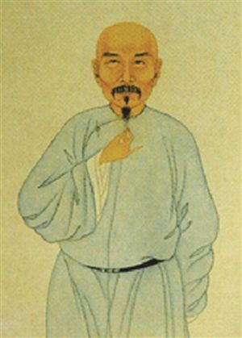
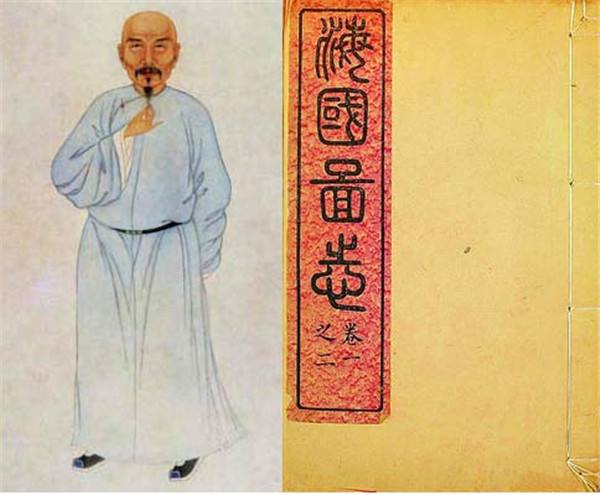

魏源同林则徐一样，是鸦片战争时期“睁眼看世界”，最有眼光的人物。他既坚决反抗侵略，又重视了解和学习西方的科学技术，作为对付侵略的重要方法。
1840年鸦片战争爆发,由于战事的失利,魏源悲愤填膺,爱国心切,于1841年3月,愤然弃笔从戎,投入两江总督、抵抗派将领裕谦幕府,到定海前线参谋战事.于1842年写成50卷的《海国图志》。
作者为什么要编撰此书呢?魏源在《海国图志》一书的序中,讲得非常清楚：“是书何以作?曰：为以夷攻夷而作,为以夷款夷而作,为师夷长技以制夷而作.” 这就是说,写书的目的,是为了了解“夷情”,帮助人们习其“长技”,以抵御外侮,振奋国威.这给那些妄自尊大,把西方先进的科学技术视为“奇技淫巧”,盲目排外的顽固派,击一猛掌。
